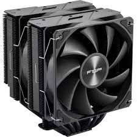
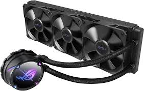

le refroidisement
le système de refroidissement aide le processeur et permet de prolonger sa durée de vie mais il y a deux type de refroidisement le aio et le ventirad
les ventirad

l'avatages du ventirad est le prix car le ventirad coute souvent moins chère que un aoi.
mais il y a aussi des desavantage comme le bruit , le style les ventirad sont souvent moins beau
les aio

les avantages sont que il et plus beau dissipe mieux la chaleur donc mieux quand on a un gros processeur
les desavantage sont que l'aio est souvent plus chere que un ventirad risque de panne a cause des pompe peut faire du bruit ect...